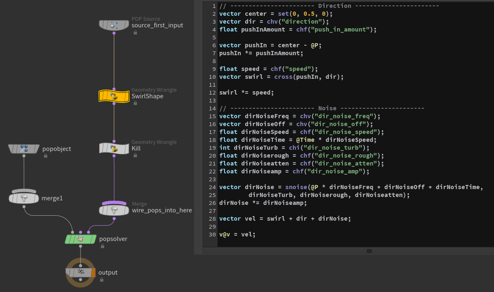
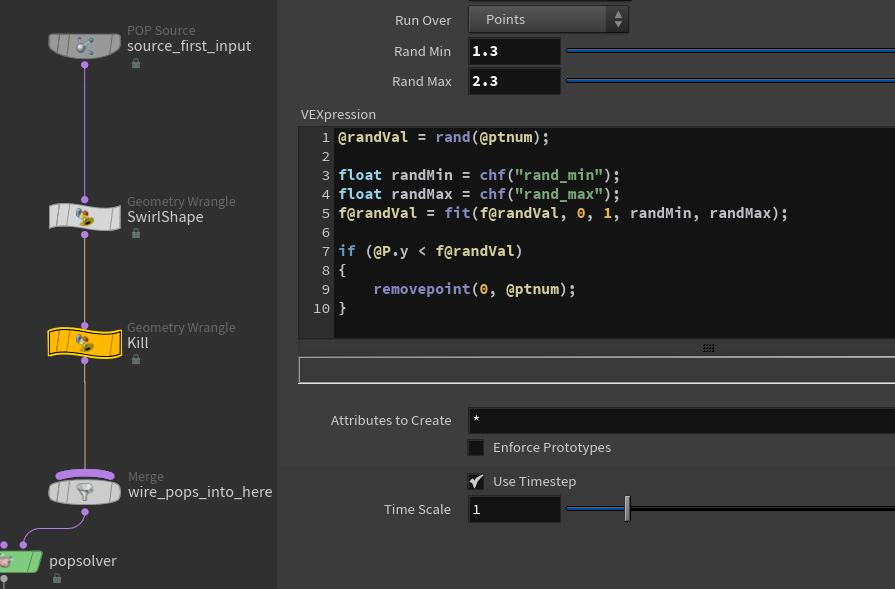
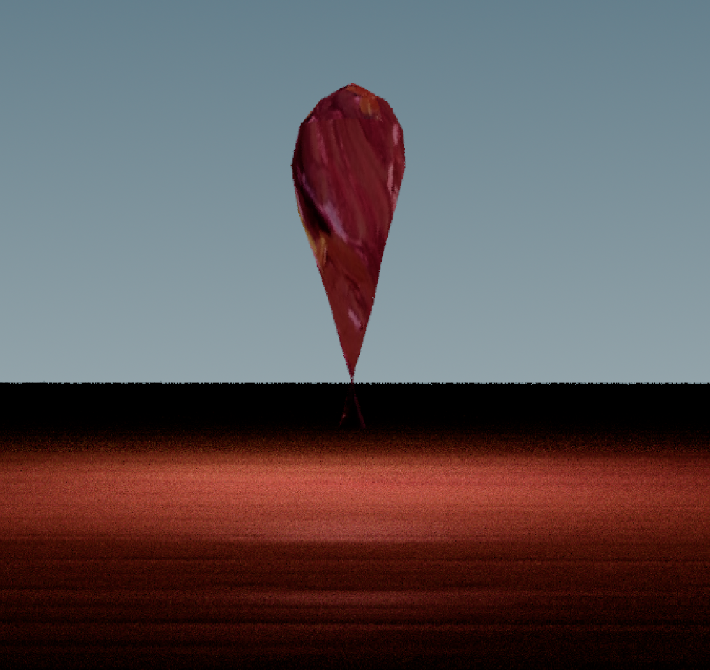
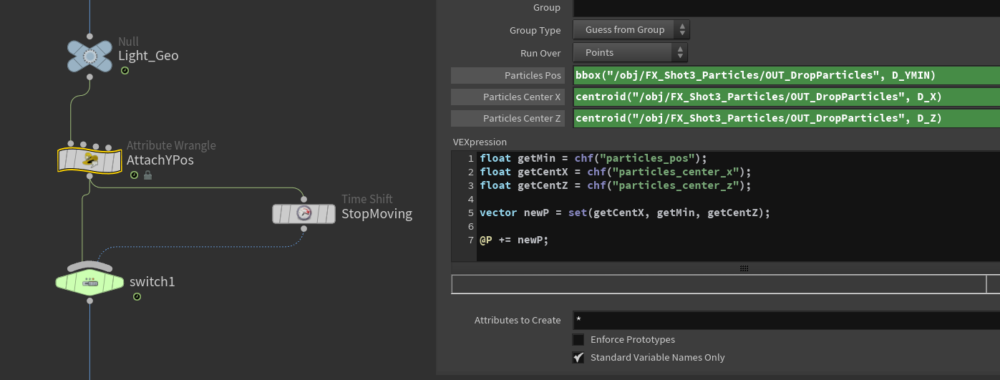
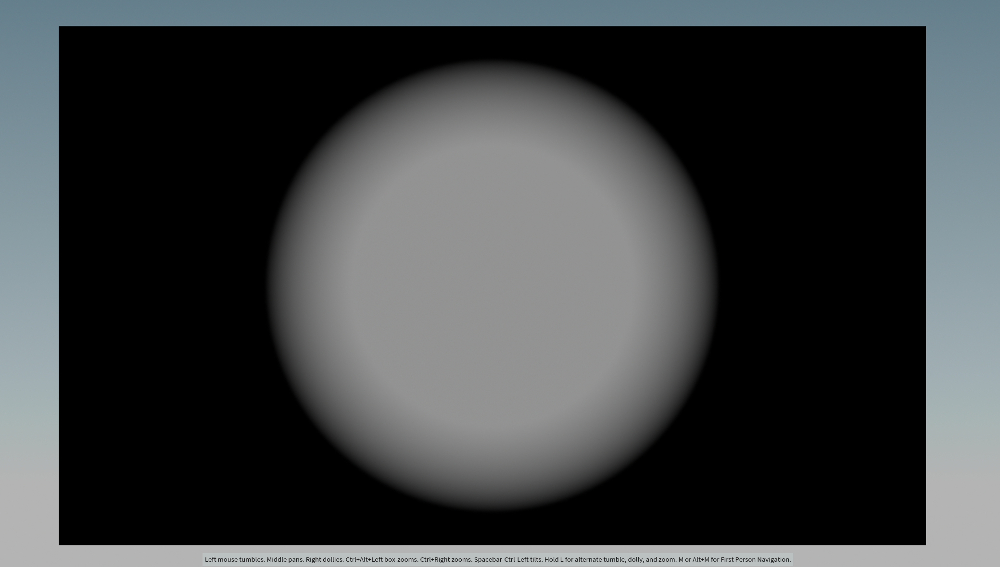
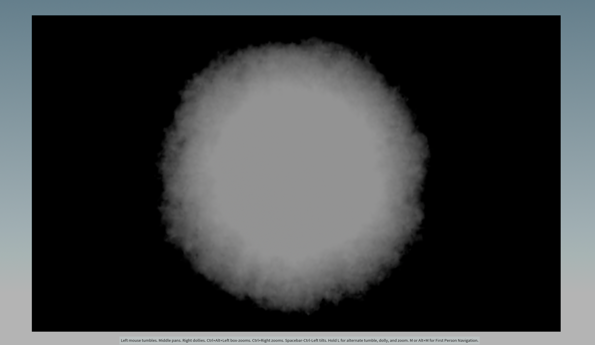
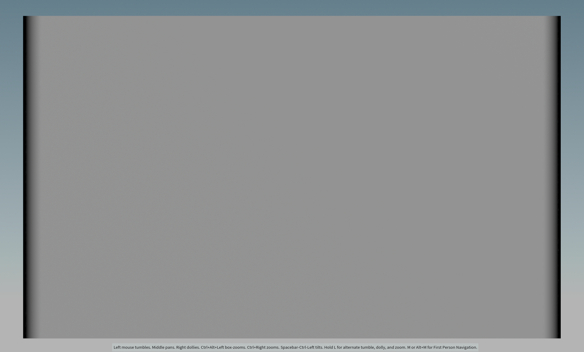
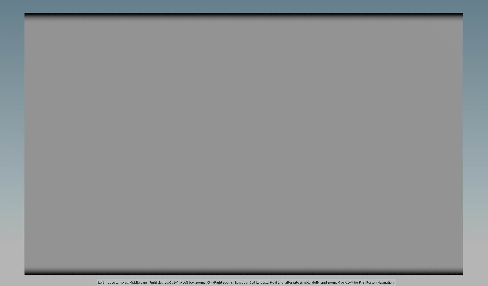
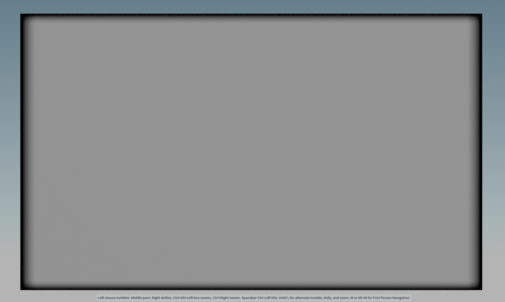

Shots 5: Background is blending too much with the product - should be darker.
Completed
Team Tasks
Shot 1: Add another layer of particles
Shot 3: Add pyro and refine particles
Refined lighting for shot 1-2 and final shot
Custom height/displacement for the painting shot
Refined materials
shot 3: Render AOVS
Shot 2-3:Compositing
Individual Tasks
Shot 1: Add spill light from the particles
Shot 3: Adjust material and lighting on the particles
Shot 3-4: Lighting
Shot 4: Add particle from shot 4 at the beginning of the shot so it’ll look continue
To-Do Lists
Team Tasks
Shot 1-2: Refine the particle flow and improve its smoothness.
Shot 3: Refine the look of particles
Shot 4: Printed materials for items in final shot
Render AOVs
Compositing
Individual Tasks
Shot 3-4: Refine particles
Shot 4: Add colorful particles floating together with the objects
Particles Around The Main One
Add scattered particles around the main particle for more variation

Create swirling effect using cross product in VEX

Kill particles based on their position
Added layer of particles
All particles combined
Manipulating Mesh Light to Create Spill Light
Use mesh light to create a convincing spill light that would be more efficient than rely solely on emissive material
Reshape and animate sphere to mimic moving light coming from the particles

Add the same texture used for particles to the mesh
Attach the position of the light source to the lowest part of the particles using VEX

VEX Code
Create Mask for Revealing Printed Texture
Use VEX code to generate a mask for transforming wood texture to the printed texture

Use distance function in Attibute Wrangle node to create black and white area based on the distance from the center to each points of the top face

Add to the original global position attribute (@P)
Problem: Printed texture has a significantly stronger bump value than the wood texture creating a gap between top face of the wood board
and the rest of it when the white mask reach the edges
Solution: Create black frame on the edges so white area will never touch the edges

Create vertical stripes using sin() in VEX

Create horizontal stripes using sin() in VEX

Multiply the horizontal and vertical stripes to combine them creating a frame